PokémonEMMA'S EMERALD
OFFICIAL Strategy Guide
Meteor Falls B1F 2R
‹ Meteor Falls B1F 1RQuest: Meteor Falls: the deep rooms (8 badges, LV45–55) · 3 of 4Next: Meteor Falls Stevens Cave ›
TIP
Wild Pokémon here are LV25–40. Time of day: M = morning (6–10), D = day (10–19), E = evening (19–20), N = night (20–6).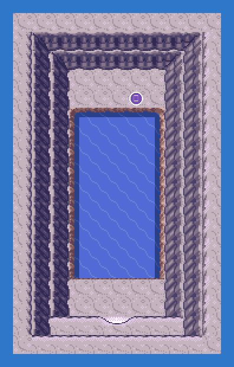
Event 1: Lowest room
Naganadel (eight badges) at the bottom of the falls.

Legendary Pokémon here
Static encounters: walk up and press A. Caught = gone for good; beaten or fled = back next visit.
Catch ’Em All! Grass & caves
 | Golbat: | LV33 | Common | MDEN |
 | Bagon: | LV30 | Common | MDEN |
 | Archen: | LV32–37 | Uncommon | MDEN |
 | Skarmory: | LV31–39 | Uncommon | MDEN |
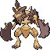 | Kleavor: | LV33–34 | Uncommon | MDEN |
 | Arctozolt: | LV27–29 | Uncommon | MDEN |
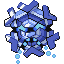 | Cryogonal: | LV29–39 | Uncommon | MDEN |
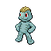 | Machop: | LV32–34 | Uncommon | MDEN |
 | Klawf: | LV29–34 | Uncommon | MDEN |
 | Galarian Stunfisk: | LV29 | Uncommon | MDEN |
 | Throh: | LV25–30 | Uncommon | MDEN |
 | Drampa: | LV29–31 | Uncommon | MDEN |
 | Cyclizar: | LV27 | Uncommon | MDEN |
 | Dracozolt: | LV33–34 | Uncommon | MDEN |
 | Sawk: | LV33 | Uncommon | MDEN |
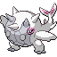 | Cetitan: | LV26–27 | Uncommon | MDEN |
 | Passimian: | LV39 | Uncommon | MDEN |
 | Minior (Meteor Red): | LV28–29 | Uncommon | MDEN |
 | Shuckle: | LV29–30 | Uncommon | MDEN |
 | Turtonator: | LV39–40 | Uncommon | MDEN |
 | Paldean Tauros: | LV30–31 | Uncommon | MDEN |
 | Flamigo: | LV38–39 | Rare | MDEN |
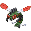 | Yanmega: | LV30–31 | Rare | MDEN |
 | Archaludon: | LV27–28 | Rare | MDEN |
 | Carbink: | LV28–29 | Rare | MDEN |
 | Togedemaru: | LV38–39 | Rare | MDEN |
 | Orthworm: | LV28–29 | Rare | MDEN |
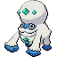 | Galarian Darmanitan: | LV29–31 | Rare | MDEN |
 | Froslass: | LV35–36 | Rare | MDEN |
 | Aerodactyl: | LV36 | Rare | MDEN |
 | Hawlucha: | LV34 | Rare | MDEN |
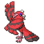 | Oricorio (Baile Style): | LV37–39 | Rare | MDEN |
 | Stonjourner: | LV37–39 | Rare | MDEN |
 | Druddigon: | LV35–36 | Rare | MDEN |
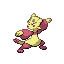 | Mienfoo: | LV32–33 | Rare | MDEN |
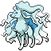 | Alolan Ninetales: | LV32–34 | Rare | MDEN |
 | Falinks: | LV33 | Rare | MDEN |
Catch ’Em All! Surfing
| Golbat: | LV30–35 | Common | MDEN |
 | Wimpod: | LV31 | Common | MDEN |
 | Tirtouga: | LV17–18 | Common | MDEN |
 | Tentacool: | LV32–33 | Common | MDEN |
 | Spheal: | LV13–15 | Common | MDEN |
 | Dewpider: | LV23–24 | Uncommon | MDEN |
 | Wooper: | LV14–15 | Uncommon | MDEN |
 | Shellos (West): | LV12–13 | Uncommon | MDEN |
 | Finneon: | LV18–20 | Uncommon | MDEN |
 | Ducklett: | LV29–31 | Rare | MDEN |
 | Chinchou: | LV29 | Rare | MDEN |
 | Corphish: | LV26 | Rare | MDEN |
 | Finizen: | LV27–29 | Rare | MDEN |
 | Surskit: | LV27–29 | Rare | MDEN |
 | Omanyte: | LV27 | Rare | MDEN |
 | Slowpoke: | LV24–25 | Rare | MDEN |
 | Froakie: | LV24 | Rare | MDEN |
Catch ’Em All! Old Rod
 | Magikarp: | LV5–10 | Common | MDEN |
 | Wingull: | LV8 | Common | MDEN |
 | Arrokuda: | LV8–10 | Common | MDEN |
 | Psyduck: | LV5–6 | Common | MDEN |
 | Wiglett: | LV7–9 | Common | MDEN |
Catch ’Em All! Good Rod
| Magikarp: | LV10–30 | Common | MDEN |
 | Mantyke: | LV24 | Common | MDEN |
 | Lotad: | LV25–26 | Common | MDEN |
 | Kabuto: | LV13 | Common | MDEN |
 | Binacle: | LV16–18 | Common | MDEN |
 | Clamperl: | LV13 | Common | MDEN |
 | Squirtle: | LV25 | Common | MDEN |
 | Chewtle: | LV28–29 | Common | MDEN |
 | Seel: | LV14 | Common | MDEN |
Catch ’Em All! Super Rod
 | Barboach: | LV25–30 | Common | MDEN |
 | Dondozo: | LV31 | Common | MDEN |
 | Relicanth: | LV30–31 | Common | MDEN |
 | Qwilfish: | LV31 | Common | MDEN |
 | Lapras: | LV31 | Common | MDEN |
 | Dracovish: | LV32–40 | Uncommon | MDEN |
 | Paldean Tauros: | LV37–39 | Uncommon | MDEN |
 | Bruxish: | LV39–40 | Uncommon | MDEN |
 | Arctovish: | LV28–30 | Uncommon | MDEN |
 | Starmie: | LV36–37 | Rare | MDEN |
 | Corsola: | LV40–41 | Rare | MDEN |
 | Veluza: | LV38–40 | Rare | MDEN |
 | Wishiwashi (Solo): | LV43 | Rare | MDEN |
 | Cramorant: | LV39–40 | Rare | MDEN |
 | Quaxwell: | LV36 | Rare | MDEN |
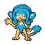 | Simipour: | LV42 | Rare | MDEN |
‹ Meteor Falls B1F 1RQuest: Meteor Falls: the deep rooms (8 badges, LV45–55) · 3 of 4Next: Meteor Falls Stevens Cave ›
139
Side Quests